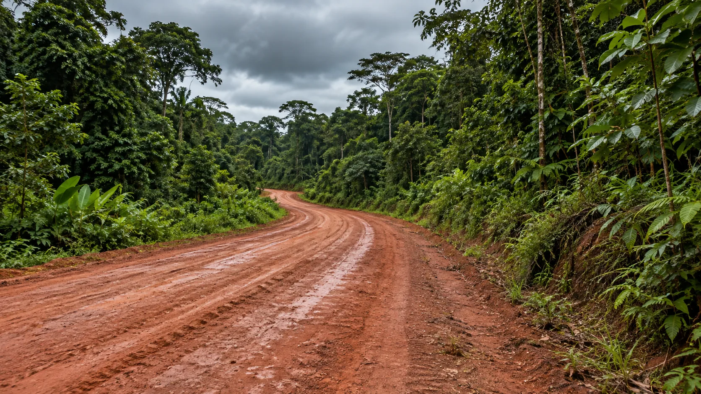
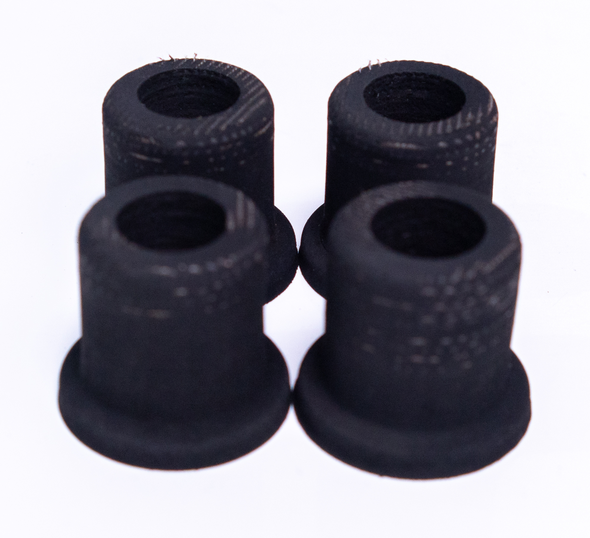

A ROTA MUDA.O PLANO TAMBÉM.
Transamazônica · Informação antes da partida.


NO CATÁLOGO · KIT10124Planeje com informação atual.Confira os trechos antes da saída.
Transamazônica · Informação antes da partida.


NO CATÁLOGO · KIT10124